Visualizes the dose-response relationship with optional model fits and confidence intervals. Can be used for continuous endpoints or binary outcomes (0/1).
plot_dose_response(
data,
dose_var,
response_var,
group_var = NULL,
connect = TRUE,
fit_model = TRUE,
show_ci = TRUE,
return_fit = FALSE,
color_palette = NULL,
x_lab = NULL,
y_lab = NULL,
log_scale = FALSE,
title = "Dose-Response Curve"
)A data frame containing the dose and response values.
Name of the column representing the dose variable.
Name of the column representing the response variable.
Optional; name of grouping variable for stratified plotting.
Logical; whether to connect mean points by line (default = TRUE).
Logical; whether to overlay a logistic/Emax model fit (default = TRUE).
Logical; whether to include a confidence interval around the model fit (default = TRUE).
Logical; if TRUE, return the fitted model as an attribute (default = FALSE).
Optional vector of colors to apply per group.
Optional x-axis label.
Optional y-axis label.
Logical; whether to log-transform x-axis (default = FALSE).
Optional title.
A ggplot object (with optional model fit attached as attribute).
# Continuous response
set.seed(123)
df <- data.frame(
dose = rep(c(0, 5, 10, 20, 40, 80), each = 20),
response = c(
rnorm(20, 10, 3),
rnorm(20, 20, 3),
rnorm(20, 30, 3),
rnorm(20, 45, 3),
rnorm(20, 55, 3),
rnorm(20, 60, 3)
)
)
plot_dose_response(df, dose_var = "dose", response_var = "response")

# Binary response with CI and binomial error bars
set.seed(321)
df_bin <- data.frame(
dose = rep(c(0, 5, 10, 20, 40, 80), each = 50)
)
df_bin$response <- rbinom(nrow(df_bin), 1, plogis((df_bin$dose - 20) / 10))
plot_dose_response(df_bin, dose_var = "dose", response_var = "response")
